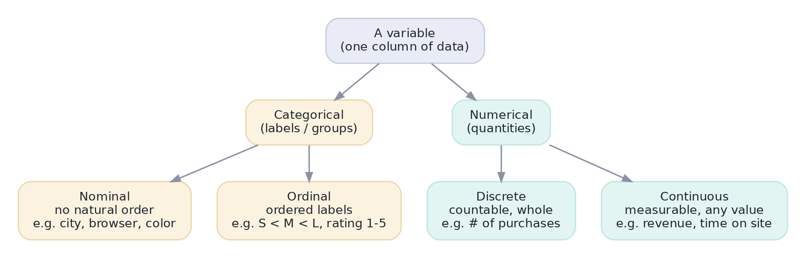
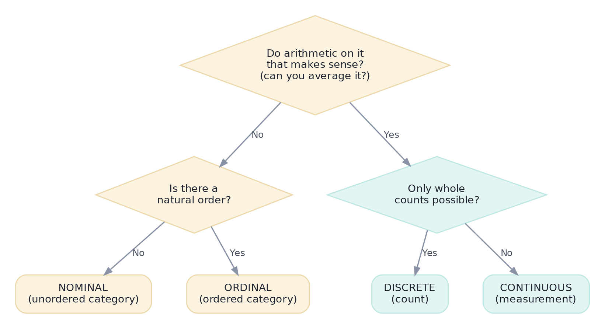

Types of Data & Variables
Before you analyze anything you must know what kind of thing you're looking at. Get this wrong and every later step breaks.
Before you compute a single statistic or draw a single chart, you have to know what kind of thing each column is. The type of a variable decides which summaries make sense, which charts are honest, and which models are even allowed. Get it wrong and you'll do something absurd — like averaging zip codes — without noticing. This lesson gives you a reliable way to classify any column in seconds.
VocabularyFirst, three words
Picture a spreadsheet of customers. Each row is one customer; each column is one thing you measured about them.
- A variable is a column — a single property that varies across rows (e.g.,
city,monthly_spend). - An observation is a row — one unit you measured (one customer).
- A value is one cell — what a particular observation scored on a particular variable.
When we ask "what type is this variable?" we are asking about a whole column, not a single cell.
ConceptThe two big families of data
Every variable is either categorical (it puts each observation into a group or label) or numerical (it measures a quantity you can do arithmetic on). Each family splits once more, giving four types in total.

Read the four leaves carefully — the definitions matter:
- Nominal — named categories with no natural order. City, browser, payment method. You can count how many fall in each group, but "greater than" is meaningless.
- Ordinal — categories with a meaningful order, but the gaps between them aren't necessarily equal. T-shirt size (S < M < L), a 1–5 satisfaction rating, education level. You can rank them, but the distance from 'S' to 'M' isn't a fixed amount.
- Discrete — numbers you get by counting, so only whole values are possible. Number of purchases, logins last week, items in a cart. You can't have 2.5 logins.
- Continuous — numbers you get by measuring, which can take any value in a range. Revenue, weight, time on site. Between any two values there's always another.
MethodA 10-second test for any column
When you meet a new column, run it through three questions. The diagram below is the whole decision; the questions are the diamonds.

The sharpest single test is the first diamond: "does averaging it mean anything?" The average of three cities is nonsense, so city is categorical. The average of three order values is a useful number, so order_value is numerical. This one question catches most mistakes.
Worked exampleThe trap: storage type is not variable type
Here's the mistake that bites beginners. When you load data, the tool (here, pandas — Python's table library, which we'll learn properly in Track 1) records a storage type, called a dtype: is this column stored as integers, decimals, or text? That is not the same as the variable type you just learned. A column can be stored as integers yet be completely categorical.
import pandas as pd
customers = pd.DataFrame({
"customer_id": [1001, 1002, 1003, 1004, 1005], # label, not a quantity
"city": ["Austin", "Austin", "Denver", "Reno", "Denver"],
"plan": ["Free", "Pro", "Pro", "Enterprise", "Free"],
"satisfaction_1to5":[4, 5, 3, 5, 2], # ordered rating
"logins_last_week": [3, 12, 7, 25, 1], # a count
"monthly_spend": [0.0, 29.0, 29.0, 99.0, 0.0], # a measured amount
})
# Pandas stores a *storage* type (dtype). It does NOT know the *variable* type.
print(customers.dtypes)
# Both columns are int64, but only one mean is meaningful:
print(f"\nmean monthly_spend = ${customers.monthly_spend.mean():.2f} <- meaningful (continuous)")
print(f"mean customer_id = {customers.customer_id.mean():.1f} <- MEANINGLESS (it's a label)")customer_id int64 city object plan object satisfaction_1to5 int64 logins_last_week int64 monthly_spend float64 dtype: object mean monthly_spend = $31.40 <- meaningful (continuous) mean customer_id = 1003.0 <- MEANINGLESS (it's a label)
customer_id is stored as int64, so the computer will happily average it — and hand you 1003.0, a meaningless number. IDs, zip codes, and survey codes like 1 = Free, 2 = Pro are nominal variables wearing a numeric costume. Always classify a column by what it means, never by how it's stored.
ConsequencesWhy the type decides everything downstream
The type isn't trivia — it dictates the right tool at every later step. This table is a preview of the next several lessons:
| Variable type | Example | A summary that fits | A chart that fits |
|---|---|---|---|
| Nominal | payment method | counts / most frequent (mode) | bar chart |
| Ordinal | satisfaction 1–5 | median, counts per level | ordered bar chart |
| Discrete | items in cart | mean, median, counts | bar chart / histogram |
| Continuous | revenue, time on site | mean, median, std dev | histogram / boxplot |
★ Key points to remember
- A variable is a column, an observation is a row, a value is a cell.
- Four types: nominal and ordinal (categorical), discrete and continuous (numerical).
- Best quick test: does averaging it mean something? If no → categorical; if yes → numerical. Then check order (nominal vs ordinal) or whole-vs-measured (discrete vs continuous).
- A column's storage type (dtype) is not its variable type. IDs and codes are nominal even when stored as numbers.
- The type you assign decides which summaries, charts, tests, and models are valid later.
zip_code contains values like 78701, 80202, 89501. What type of variable is it?◆ Practice▸
driver_rating (1–5 stars); (b) trip_distance_km; (c) payment_type (cash, card, wallet); (d) num_passengers; (e) pickup_zip.Show solution & reasoning
(a) Ordinal — ordered ratings, but the gap between 4 and 5 stars isn't guaranteed equal to 1→2. (b) Continuous — a measured distance, any value in a range. (c) Nominal — unordered labels. (d) Discrete — a count of whole passengers. (e) Nominal — a zip is a place label, not a quantity, despite being numeric.
star_rating column and also the average of an account_id column. One of these is reasonable and one is nonsense. Which is which, and what's the underlying rule?Show solution & reasoning
Averaging star_rating is defensible but imperfect — it's ordinal, so the mean assumes equal spacing between stars (many teams still report it, but the median is safer). Averaging account_id is nonsense — it's a nominal label, so its numeric value carries no quantity. The rule: only average variables where the magnitude of the number means something, i.e., numerical variables.
◎ Deep dive: the four levels of measurement (nominal, ordinal, interval, ratio)▸
Statisticians often use a finer, four-level scheme from psychologist S. S. Stevens (1946) called the levels of measurement. It splits our 'numerical' family by asking whether the scale has equal intervals and a true zero:
- Nominal — labels only (city). Equality is the only relation.
- Ordinal — order, but unequal/unknown gaps (satisfaction 1–5).
- Interval — equal gaps, but no true zero, so ratios are meaningless. Celsius temperature: 20°C isn't 'twice as hot' as 10°C, because 0°C isn't 'no heat'.
- Ratio — equal gaps and a true zero, so ratios make sense. Revenue, weight, time, counts: $100 really is twice $50, because $0 means none.
Why care? Because the level controls which operations are valid. You can rank ordinal data but shouldn't average it freely; you can add and subtract interval data but shouldn't take ratios; only ratio data supports the full toolkit including percentages and coefficients of variation. When an interviewer asks why you wouldn't say "30°C is 50% warmer than 20°C," this is the answer: temperature in Celsius is interval, not ratio.
Expect "what kinds of variables are there, and why does it matter?" Name the four types with an example each, then deliver the punchline interviewers want: the type determines which summary statistic, chart, and statistical test are valid — and that an ID stored as an integer is still categorical.